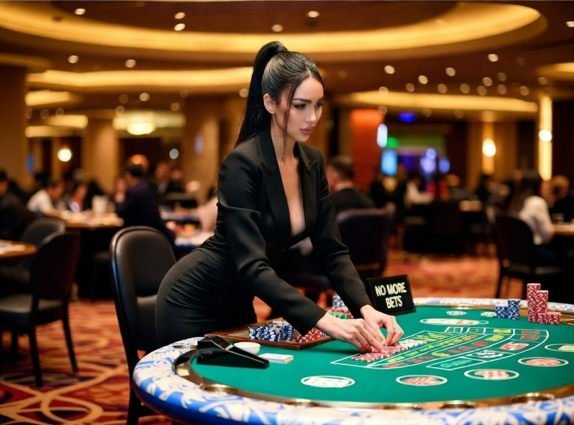
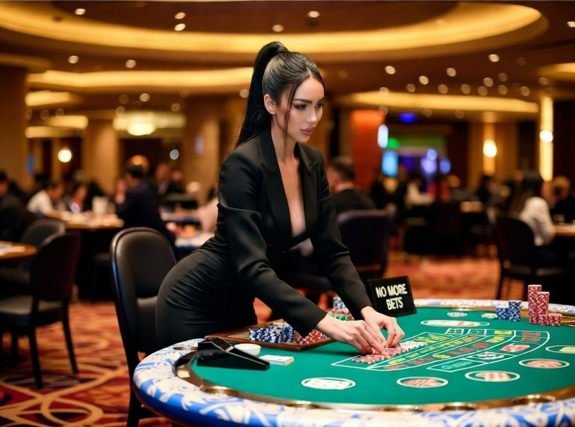

El poker es tensión pura, miradas que intimidan y decisiones que pueden cambiarlo todo en segundos. Cada mano es una batalla. Cada apuesta, un desafío.
¿Crees que puedes mantener la calma cuando el all-in está sobre la mesa?
Aqui no hay espacio para las dudas
Aqui se viene a ganar.
Entra en la mesa, apuesta fuerte y demuestra quien manda.

 
